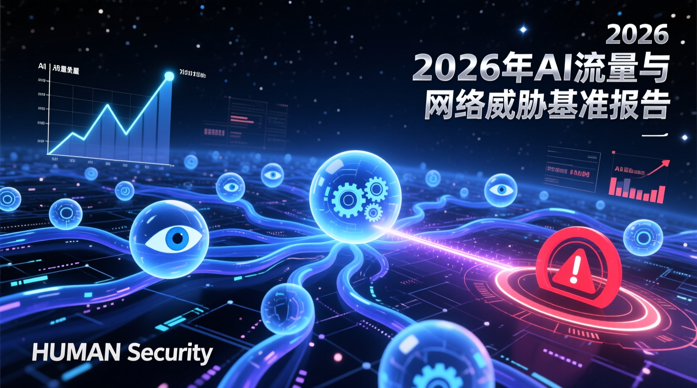

本影片探討2026年AI流量與網絡威脅的最新報告，指出機器流量已超越人類流量，成為互聯網的主要驅動力。報告顯示，AI驅動流量在2025年成長高達187%，其中AI代理（Agent）流量更激增7,851%。AI爬蟲、實時抓取器與AI代理三種類型的流量結構發生根本變化，對網路安全帶來新挑戰。報告指出，A...

本影片探討2026年AI流量與網絡威脅的最新報告，指出機器流量已超越人類流量，成為互聯網的主要驅動力。報告顯示，AI驅動流量在2025年成長高達187%，其中AI代理（Agent）流量更激增7,851%。AI爬蟲、實時抓取器與AI代理三種類型的流量結構發生根本變化，對網路安全帶來新挑戰。報告指出，AI技術已開始自主執行任務，如購物、支付等，並導致網絡攻擊行為難以區分。企業與用戶需提升防禦能力，建立智能化的網路安全體系，以應對AI時代的風險。
根據HUMAN Security於2026年發布的《2026年AI流量與網絡威脅基準報告》，2025年間自動化流量增長23.51%，遠超過人類流量的3.1%。其中，AI驅動流量成長幅度高達187%，而AI代理流量更是暴增7,851%，顯示機器自主學習與執行任務的能力大幅提高。報告指出，AI流量主要分為三類：AI訓練爬蟲、實時抓取器與AI代理。2025年初，AI訓練爬蟲佔比達90%，但至年底下降至74%，而實時抓取器與AI代理則分別成長至24%與1.7%。這反映出AI技術從資料收集逐步轉向主動任務執行。
報告進一步分析AI流量的行業分布，電商、媒體與旅遊業吸收了超過95%的AI流量，因其數據結構化程度高且更新頻率快。AI代理活動多集中於商品與搜尋頁面，僅有2.3%出現在結帳頁面，顯示其已能自主完成交易流程。然而，這種能力也帶來新的網絡威脅，例如帳號劫持、數據抓取與虛假帳戶創建等。報告指出，2025年近五分之一的網站訪問為抓取攻擊，帳號接管嘗試次數較2022年成長四倍，顯示網路威脅日益嚴重。
此外，報告指出良性與惡性自動化流量比例僅差0.5%，意味著合法與非法行為模式極為相似，使傳統防禦手段難以辨識。企業與用戶需加強防護，建立智能化的網路安全系統，以應對AI時代的挑戰。
AI流量的快速成長已改變互聯網生態，機器行為逐漸取代人類互動，同時也帶來前所未有的網絡威脅。報告揭示AI代理已具備自主操作能力，使合法與非法行為難以區分，對傳統防禦體系構成挑戰。企業與用戶需提升防範意識，採用智能防禦機制，共同維護安全的網路環境。未來，AI技術將持續推進社會發展，但也需正視其潛在風險，建立健全的規範與監管機制，以確保AI應用的正面效益。